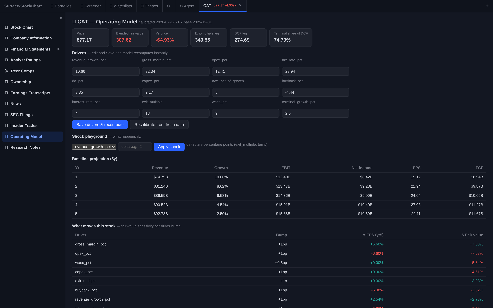
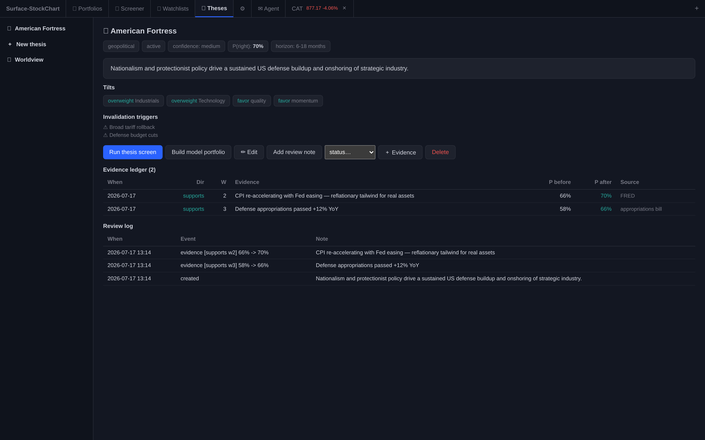
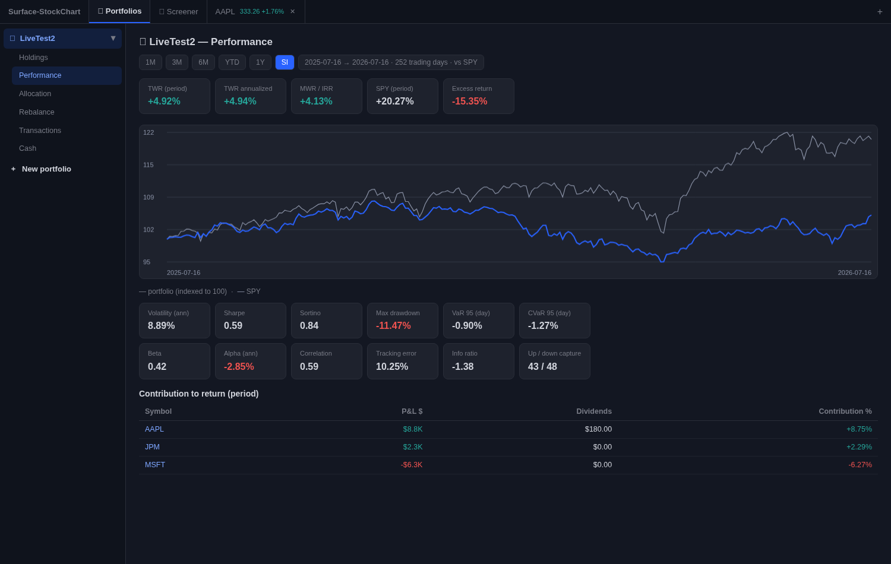
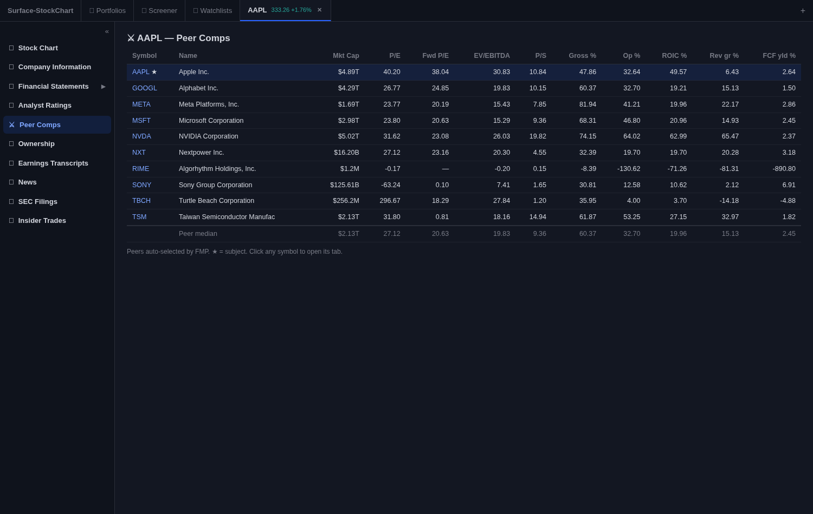

OrreryOrrery
An agent-native investment research terminal for Claude
OrreryOrrery
An agent-native investment research terminal for Claude
Orrery doesn't just fetch data — it maintains a living model of the world and hands the agent the controls. A worldview that becomes probability-weighted theses, driver-based company models, and portfolios, all on a surface the agent reads and drives, all on your machine.

Two ideas make it unlike anything else you can install — and they compound the longer you use it.
Orrery maintains a structured worldview across macro, geopolitics, and demographics, turns it into theses with explicit probabilities and an evidence ledger that revises the odds as reality changes, and grounds every name in a driver-based operating model. The model persists and compounds between sessions instead of resetting each time you open it.
The terminal is a shared world-model: everything you see, the agent can read and drive. It isn't a dashboard a human clicks — it's an operating surface with 90+ introspectable tools, an event inbox, reusable playbooks, an audit journal, and research memory. Ask in plain language; the agent inspects the exact view you're looking at and acts on it.
A worldview at the center — fed by FRED macro, SEC filings, and 13F flows — radiates into theses, company models, and portfolios, and the whole system is reassessed as new evidence arrives. That's the orrery: a working model of the market in motion.
From a market view to a modeled position — top to bottom, all agent-operable.
Every company can carry a driver-based model calibrated from its filings and consensus. Turn any event into an instant answer.
A maintained worldview feeds candidate theses with explicit probabilities and an evidence ledger that updates them as the world changes — the system even proposes its own from FRED macro data.

The measurement core professionals expect — verified against closed forms.

Cross-sectional factor composites, an expression language, and relative-valuation tables — well beyond boolean filters.

~125 indicators, 39 drawing tools, every granularity, extended hours — no third-party library.
Watchlists, edge-triggered alerts with playbooks, a catalyst calendar scoped to your names, a morning brief.
A workspace cockpit, an event inbox, research memory, an audit journal — the agent watches and drafts the work.
Runs locally, keys stay on your machine, security-reviewed, fully test-covered, and it never places a trade.
Two ways, depending on how you run Claude.
orrery.plugin from Releases.claude plugin marketplace add pauljbernard/orrery-marketplace
claude plugin install orrery@orreryRequires Node.js 18+. Stay current: the plugin tells you when a new version ships. Update & uninstall guide →